|
The Cambridge Dictionary of Philosophy
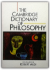
Robert Audi
This is the most authoritative and comprehensive one-volume dictionary of philosophy available in English. It contains over 4,000 entries, which range in length from 100 to 4,000 words. The Dictionary has been written by an international team of over 350 experts, so, rather than offering the limited perspective of a single writer, it distils the collective knowledge of the professional community of philosophers in an accessible manner.The Cambridge Dictionary clearly and concisely defines both technical terms and crucial concepts, and will promote the understanding of philosophy on all levels and across all fields. It includes substantial explanatory articles on all major philosophers as well as hundreds of minor figures. There are expansive, up-to-date overviews of all the important sub-disciplines such as ethics, epistemology, metaphysics, philosophy of mind and logic. No other reference work on philosophy contains so many entries on related subjects such as cognitive science, linguistics, theology, law, history of science and literature.
Dave Barry Talks Back
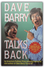
Dave Barry
Yet another collection of Barry wit and wisdom by the Pulitzer Prize-winning humorist and the author of Dave Barry Turns 40. Reprint. NYT. 100,000 first printing. $75,000 ad/promo.
The Philosophy of John Dewey
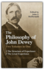
John Dewey, John J. McDermott
John J. McDermott's anthology, The Philosophy of John Dewey, provides the best general selection available of the writings of America's most distinguished philosopher and social critic. This comprehensive collection, ideal for use in the classroom and indispensable for anyone interested in the wide scope of Dewey's thought and works, affords great insight into his role in the history of ideas and the basic integrity of his philosophy.This edition combines in one book the two volumes previously published separately. Volume 1, "The Structure of Experience," contains essays on metaphysics, the logic of inquiry, the problem of knowledge, and value theory. In volume 2, "The Lived Experience," Dewey's writings on pedagogy, ethics, the aesthetics of the "live creature," politics, and the philosophy of culture are presented. McDermott has prefaced each essay with a helpful explanatory note and has written an excellent general introduction to the anthology. Release 2.0
Written with an insider's knowledge and a ready wit, and filled with anecdotes about the movers and shakers behind both products and policy, Release 2.0 provides readers with a full understanding of the new world of cyberspace and shows how it is transforming the way we work and live. With a perspective at once authoritative and totally accessible, she outlines the choices and questions readers face as active citizens helping to define and shape a new social contract for the digital age. As Dyson explains, "The Net gives awesome power to individuals—the ability to be heard across the world, the ability to find information. But with this greater ability to exercise their rights, or abuse them, individuals will need to exercise greater responsibility for their own actions and for the world they are creating." In Release 2.0, Dyson charts the implications of the Internet for business, government, education, communities, and individuals, and illuminates the fundamental conflicts in the spread of digital communication: conflicts between personal privacy and society's interest in openness, between security and freedom, between commerce and community, between government oversight and personal autonomy, between flourishing creativity and the protection of intellectual property. As Dyson makes clear, the digital society will bring profound shifts in the balance of power between producers and consumers, governments and citizens, the mass media and their audiences. Now the challenge, and the opportunity, is for citizens to resolve these conflicts and trade-offs in their own public and private communities. Throughout, Dyson's message is prescriptive and proactive: If we want to make the world a better place, with the advent of the Internet we have both the opportunity and the power to shape the new rules we want to live by. And, to demonstrate, Dyson shares her own short list of rules for being a citizen of the Net—from "Use your judgment," and "Ask questions" to "Be a producer" and "Always make new mistakes"—and invites each of us to create our own rules. Lively, informative, and always challenging, Release 2.0 will speak to all readers looking to understand and design our new digital society. Penguin
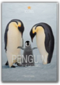
Christine Eckstrom
This work presents intense, intimate encounters with penguins through Frans Lanting's lens.
China: A New History
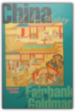
John King Fairbank, Merle Goldman
Bringing to bear 60 years of research, travel, and teaching, Fairbank weaves a detailed history that reaches from China's neolithic days to its troubled present. He depicts a country ever-changing and yet constant in its effort to achieve a cohesive identity, an enormous and enormously complex nation perpetually balancing between the imperatives of force and the power of ideas. Here are the Chinese autocrats in their various times and guises, maintaining Confucian civility and order through - paradoxically - the perpetual threat of irrational imperial violence. Here is the intellectual class, revered for its wisdom and counsel and yet - as events from the Cultural Revolution to the massacre in Tiananmen Square demonstrate - eminently expendable. And here are China's farmers engaged in a never-ending attempt to tame their countryside only to face repeated famine as China's agrarian-based economy fails to develop. At the centre of all stands the Chinese family, until recently the model for both obedience and tyranny in society at large. Fairbank traces the growth of a civilization that could embrace so many contradictions and disruptions and yet retain a strong sense of its identity. Following China's ambivalent relations with the West and with the forces of modernization, he identifies, even in the great leap forward signaled by the Communist Revolution, the assumptions that have informed Chinese society for thousands of years. From the influences of Buddhism through the flowering of Song China to the reforms of Deng Xiaoping, this illustrated history unfolds.
Do Penguins Have Knees?: An Imponderables Book
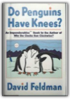
David Feldman
Ponder, if you willWhat happens to your Social Security number when you die? Why are peanuts listed as an ingredient in plain M&Ms? Why is Barbie's hair made out of nylon, but Ken's hair is plastic? What makes up the ever-mysterious "new-car smell"? Pop-culture guru David Feldman demystifies these topics and so much more in Do Penguins Have Knees? — the unchallenged source of answers to civilization's most perplexing questions. Part of the Imponderables® series, Do Penguins Have Knees? arms readers with the knowledge about everyday life that encyclopedias, dictionaries, and almanacs just don't have. And think about it, where else are you going to get to the bottom of how beer was kept cold in the Old West? Bison
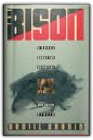
Daniel Granin
Lonely Planets: The Natural Philosophy of Alien Life
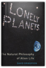
David Grinspoon
It's been nearly four decades since Carl Sagan first addressed the general public from a scientist's perspective, confronting the possibility of extraterrestrial life. We've learned a lot in those years, and planetary scientist David Grinspoon is well prepared to explore this field with a new generation of readers. In "Lonely Planets, Grinspoon investigates the big questions: How widespread are life and intelligence in the cosmos? Is life on Earth an accident or in some sense the "purpose" of this universe? And how can we, working from the Earth-centric definition of "life," even begin to think about the varieties of life-forms on other planets? In accessible, lively prose, and using the topic of extraterrestrial life as a mirror with which to view human beliefs, evolution, history, and aspirations, Grinspoon takes readers on a three-part journey. History is an overview of our expanding awareness of other planets, from the observations of seventeenth-century natural philosophers to modern-day space exploration. It traces the history of our ideas on alien life to the earliest days of astronomy, and shows how these beliefs have changed with humanity's evolving self-image. Science tells the story of cosmic evolution and the evolution of life on Earth. Here, Grinspoon disputes the recent "Rare Earth hypothesis," which argues that Earth is unique for sprouting advanced life-forms, maintaining instead that life is likely to be well adapted to a wide variety of planets. He questions conventional assumptions of what is required for a planet to come to life, scrutinizing current ideas and evidence for life on Mars, Venus, and the moons of Jupiter, and challenging readers to thinkabout other life-forms that may exist on other worlds. Belief discusses the limits of our abilities to conceptualize or communicate with intelligent aliens living on planets circling distant stars. Grinspoon speculates on what intelligent life might become, eventually, on Earth and elsewhere, and the implications, both scientific and philosophical, of these far-future evolutionary possibilities. Written with authority and edge, and rich in personal, often amusing anecdotes, "Lonely Planets explores the shifting boundary between planetary science and natural philosophy and reveals how the search for extraterrestrial life unites our spiritual and scientific quests for connection with the cosmos.
Cod: A Biography of the Fish That Changed the World
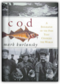
Mark Kurlansky
The codfish. Wars have been fought over it, revolutions have been spurred by it, national diets have been based on it, economies and livelihoods have depended on it, and the settlement of North America was driven by it. To the millions it has sustained, it has been a treasure more precious than gold. Indeed, the codfish has played a fascinating and crucial role in world history.Cod spans a thousand years and four continents. From the Vikings, who pursued the codfish across the Atlantic, and the enigmatic Basques, who first commercialized it in medieval times, to Bartholomew Gosnold, who named Cape Cod in 1602, and Clarence Birdseye, who founded an industry on frozen cod in the 1930s, Mark Kurlansky introduces the explorers, merchants, writers, chefs, and of course the fishermen, whose lives have interwoven with this prolific fish. He chronicles the fifteenth-century politics of the Hanseatic League and the cod wars of the sixteenth and twentieth centuries. He embellishes his story with gastronomic detail, blending in recipes and lore from the Middle Ages to the present. And he brings to life the cod itself: its personality, habits, extended family, and ultimately the tragedy of how the most profitable fish in history is today faced with extinction. From fishing ports in New England and Newfoundland to coastal skiffs, schooners, and factory ships across the Atlantic; from Iceland and Scandinavia to the coasts of England, Brazil, and West Africa, Mark Kurlansky tells a story that brings world history and human passions into captivating focus. Metal Cowboy: Tales from the Road Less Pedaled
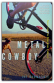
Joe Kurmaskie
Joe Kurmaskie, dubbed the “Metal Cowboy” by a blind rancher he encountered one icy morning in Idaho, has been addicted to the intoxicating freedom and power of the bicycle ever since he “borrowed” his big sister’s banana-seat bike at the age of five. As he careened down the neighborhood hill, much to his parents’ dismay, Joe set in motion what has become a lifelong love affair with the road and the wheel. In Metal Cowboy, Joe offers up an infectious and big-hearted collection of true adventures and misadventures, chronicling his time touring America on his bicycle.Whether he is climbing a tree to avoid the insistent pecking of a flock of geese in New Hampshire, tooling around a motel parking lot in Utah with a touring group of Elvis impersonators, or filling in as a last-minute scarecrow in a North Carolina Halloween parade, Joe revels in the charm of small town America and the unforgettable characters who dot our landscape. Full of energy, wit, and wisdom, Metal Cowboy is both an inspiration and a call to the road, full of the simple joy of a path well pedaled and a life less ordinary. Ultimate: The Greatest Sport Ever Invented by Man
This book will provide you with complete and total knowledge of the Ultimate game. THIS BOOK INCLUDES: — The Eight Ultimate Player Types — The 42 Most Common Nicknames — 28 Near-Useless Throws on the Field — How to Name Your Ultimate Team — Where to Play Ultimate Without Being Mocked — How to Score at an Ultimate Party — Useful Playing Tips from Experts of the Game PLUS: HOW TO PLAY ULTIMATE IN EIGHT EASY STEPS – AN ILLUSTRATED GUIDE — Can I play Ultimate with a mustache? — Where do Ultimate babies come from? — How can I become an Ultimate champion without practicing? — What is “throwing Fire”? — How can I survive a shark attack? About the author: Pasquale Anthony Leonardo IV has covered numerous championship Ultimate tournaments since 1997 and was the Media Director for the 2006 World Junior Ultimate Championships. In 2005 he co-wrote Ultimate: The First Four Decades, which was reviewed in Sports Illustrated and featured on ESPN’s live talk show "Cold Pizza." He also writes screenplays. He lives in Brooklyn, New York and/or somewhere out West. Linguistics: A Very Short Introduction
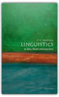
P. H. Matthews
Linguistics falls in the gap between arts and science, on the edges of which the most fascinating discoveries and the most important problems are found. Beginning at the 'arts' end of the subject with the common origins of languages, and finishing at the 'science' end with the newest discoveries regarding language in the brain, this stimulating guide covers all the major aspects of linguistics from a refreshing and insightful angle.About the Series: Combining authority with wit, accessibility, and style, Very Short Introductions offer an introduction to some of life's most interesting topics. Written by experts for the newcomer, they demonstrate the finest contemporary thinking about the central problems and issues in hundreds of key topics, from philosophy to Freud, quantum theory to Islam. A Mathematician Reads the Newspaper
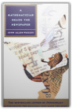
John Allen Paulos
With the same user-friendly, quirky, and perceptive approach that made Innumeracy a bestseller, John Allen Paulos travels though the pages of the daily newspaper showing how math and numbers are a key element in many of the articles we read every day. From the Senate, SATs, and sex, to crime, celebrities, and cults, he takes stories that may not seem to involve mathematics at all and demonstrates how a lack of mathematical knowledge can hinder our understanding of them.
The Mobius Strip: Dr. August Mobius's Marvelous Band in Mathematics, Games, Literature, Art, Technology, and Cosmology
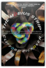
Clifford A. Pickover
The road that leads from the Möbius strip — a common-sense-defying continuous loop with only one side and one edge, made famous by the illustrations of M.C. Escher — goes to some of the strangest spots imaginable. It takes us to where the purely intellectual enters our world: where our senses, overloaded with grocery bills, the price of gas, and what to eat for lunch, are expected to absorb really bizarre ideas. And no better guide to this weird universe exists than the brilliant thinker Clifford A. Pickover, the 21st century's answer to Buckminster Fuller. From molecules and metal sculptures to postage stamps, architectural structures, and models of the universe, The Möbius Strip gives readers a glimpse of new ways of thinking and other worlds as Pickover reaches across cultures and peers beyond our ordinary reality. Lavishly illustrated, this is an infinite fountain of wondrous forms that can be used to help explain how mathematics has permeated every field of scientific endeavor, such as the colors of a sunset or the architecture of our brains; how it helps us build supersonic aircraft and roller coasters, simulate the flow of Earth's natural resources, explore subatomic quantum realities, and depict faraway galaxies.
The Code Book: The Evolution of Secrecy from Mary, Queen of Scots to Quantum Cryptography
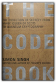
Simon Singh
Codes have decided the fates of empires, countries, and monarchies throughout recorded history. Mary, Queen of Scots was put to death by her cousin, Queen Elizabeth, for the high crime of treason after spymaster Sir Francis Walsingham cracked the secret code she used to communicate with her conspirators. And thus the course of British history was altered by a few sheets of cryptic prose. This is just one link in humankind's evolutionary chain of secret communication, and just one of the fascinating incidents recounted in The Code Book, written by bestselling author Simon Singh.Combining a superb storyteller's sense of drama and a scientist's appreciation for technical perfection, Singh traces the evolution of secret writing from ancient Greek military espionage to the frontiers of computer science. The result is an epic tale of human ingenuity, with examples that range from the poignant to the peculiar to the world-historical. There is the case of the Beale ciphers, which involves Wild West escapades, a cowboy who amassed a vast fortune, a buried treasure worth $20 million, and a mysterious set of encrypted papers describing its whereabouts—papers that have baffled generations of cryptanalysts and captivated hundreds of treasure hunters. A speedier end to a bloody war was the only reward that could be promised to the Allied code breakers of World Wars I and II, whose selfless contributions altered the course of history; but few of them lived to receive any credit for their top-secret accomplishments. Among the most moving of these stories is that of the World War II British code breaker Alan Turing, who gave up a brilliant career in mathematics to devote himself to the Allied cause, only to end his years punished by the state for his homosexuality, while his heroism was ignored. No less heroic were the Navajo code talkers, who volunteered without hesitation to risk their lives for the Allied forces in the Japanese theater, where they were routinely mistaken for the enemy. Interspersed with these gripping stories are clear mathematical, linguistic, and technological demonstrations of codes, as well as illustrations of the remarkable personalities—many courageous, some villainous, and all obsessive—who wrote and broke them. All roads lead to the present day, in which the possibility of a truly unbreakable code looms large. Singh explores this possibility, and the ramifications of our increasing need for privacy, even as it begins to chafe against the stated mission of the powerful and deeply secretive National Security Agency. Entertaining, compelling, and remarkably far-reaching, this is a book that will forever alter your view of history, what drives it, and how private that e-mail you just sent really is. Included in the book is a worldwide Cipher Challenge—a $15,000 award will be given by the author to the first reader who cracks the code successfully. Progress toward the solution will be tracked on The Code Book website. You Just Don't Understand: Women and Men in Conversation
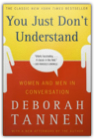
Deborah Tannen
Women and men live in different worlds...made of different words.Spending nearly four years on the New York Times bestseller list, including eight months at number one, You Just Don't Understand is a true cultural and intellectual phenomenon. This is the book that brought gender differences in ways of speaking to the forefront of public awareness. With a rare combination of scientific insight and delightful, humorous writing, Tannen shows why women and men can walk away from the same conversation with completely different impressions of what was said. Studded with lively and entertaining examples of real conversations, this book gives you the tools to understand what went wrong — and to find a common language in which to strengthen relationships at work and at home. A classic in the field of interpersonal relations, this book will change forever the way you approach conversations. You're Wearing That?: Understanding Mothers and Daughters in Conversation
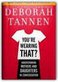
Deborah Tannen
Deborah Tannen's #1 New York Times bestseller You Just Don’t Understand revolutionized communication between women and men. Now, in her most provocative and engaging book to date, she takes on what is potentially the most fraught and passionate connection of women’s lives: the mother-daughter relationship.It was Tannen who first showed us that men and women speak different languages. Mothers and daughters speak the same language–but still often misunderstand each other, as they struggle to find the right balance between closeness and independence. Both mothers and daughters want to be seen for who they are, but tend to see the other as falling short of who she should be. Each overestimates the other’s power and underestimates her own. Why do daughters complain that their mothers always criticize, while mothers feel hurt that their daughters shut them out? Why do mothers and daughters critique each other on the Big Three–hair, clothes, and weight–while longing for approval and understanding? And why do they scrutinize each other for reflections of themselves? Deborah Tannen answers these and many other questions as she explains why a remark that would be harmless coming from anyone else can cause an explosion when it comes from your mother or your daughter. She examines every aspect of this complex dynamic, from the dark side that can shadow a woman throughout her life, to the new technologies like e-mail and instant messaging that are transforming mother-daughter communication. Most important, she helps mothers and daughters understand each other, the key to improving their relationship. With groundbreaking insights, pitch-perfect dialogues, and deeply moving memories of her own mother, Tannen untangles the knots daughters and mothers can get tied up in. Readers will appreciate Tannen’s humor as they see themselves on every page and come away with real hope for breaking down barriers and opening new lines of communication. Eye-opening and heartfelt, You’re Wearing That? illuminates and enriches one of the most important relationships in our lives. “Tannen analyzes and decodes scores of conversations between moms and daughters. These exchanges are so real they can make you squirm as you relive the last fraught conversation you had with your own mother or daughter. But Tannen doesn't just point out the pitfalls of the mother-daughter relationship, she also provides guidance for changing the conversations (or the way that we feel about the conversations) before they degenerate into what Tannen calls a mutually aggravating spiral, a "self-perpetuating cycle of escalating responses that become provocations." – The San Francisco Chronicle The Nine: Inside the Secret World of the Supreme Court
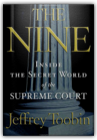
Jeffrey Toobin
Bestselling author Jeffrey Toobin takes you into the chambers of the most important—and secret—legal body in our country, the Supreme Court, and reveals the complex dynamic among the nine people who decide the law of the land.Just in time for the 2008 presidential election—where the future of the Court will be at stake—Toobin reveals an institution at a moment of transition, when decades of conservative disgust with the Court have finally produced a conservative majority, with major changes in store on such issues as abortion, civil rights, presidential power, and church-state relations. Based on exclusive interviews with justices themselves, The Nine tells the story of the Court through personalities—from Anthony Kennedy's overwhelming sense of self-importance to Clarence Thomas's well-tended grievances against his critics to David Souter's odd nineteenth-century lifestyle. There is also, for the first time, the full behind-the-scenes story of Bush v. Gore—and Sandra Day O'Connor's fateful breach with George W. Bush, the president she helped place in office. The Nine is the book bestselling author Jeffrey Toobin was born to write. A CNN senior legal analyst and New Yorker staff writer, no one is more superbly qualified to profile the nine justices. The Golden Spruce: A True Story of Myth, Madness, and Greed
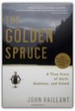
John Vaillant
A tale of obsession so fierce that a man kills the thing he loves most: the only giant golden spruce on earth.As vividly as Jon Krakauer put readers on Everest, John Vaillant takes us into the heart of North America's last great forest, where trees grow to eighteen feet in diameter, sunlight never touches the ground, and the chainsaws are always at work.When a shattered kayak and camping gear are found on an uninhabited island, they reignite a mystery surrounding a shocking act of protest. Five months earlier, logger-turned-activist Grant Hadwin had plunged naked into a river in British Columbia's Queen Charlotte Islands, towing a chainsaw. When his night's work was done, a unique Sitka spruce, 165 feet tall and covered with luminous golden needles, teetered on its stump. Two days later it fell. The tree, a fascinating puzzle to scientists, was sacred to the Haida, a fierce seafaring tribe based in the Queen Charlottes. Vaillant recounts the bloody history of the Haida and the early fur trade, and provides harrowing details of the logging industry, whose omnivorous violence would claim both Hadwin and the golden spruce. Off the Books: The Underground Economy of the Urban Poor
Host: Chris Gondek | Producer: Heron & Crane In this revelatory book, Sudhir Venkatesh takes us into Maquis Park, a poor black neighborhood on Chicago's Southside, to explore the desperate, dangerous, and remarkable ways in which a community survives. We find there an entire world of unregulated, unreported, and untaxed work, a system of living off the books that is daily life in the ghetto. From women who clean houses and prepare lunches for the local hospital to small-scale entrepreneurs like the mechanic who works in an alley; from the preacher who provides mediation services to the salon owner who rents her store out for gambling parties; and from street vendors hawking socks and incense to the drug dealing and extortion of the local gang, we come to see how these activities form the backbone of the ghetto economy. What emerges are the innumerable ways that these men and women, immersed in their shadowy economic pursuits, are connected to and reliant upon one another. The underground economy, as Venkatesh's subtle storytelling reveals, functions as an intricate web, and in the strength of its strands lie the fates of many Maquis Park residents. The result is a dramatic narrative of individuals at work, and a rich portrait of a community. But while excavating the efforts of men and women to generate a basic livelihood for themselves and their families, Off the Books offers a devastating critique of the entrenched poverty that we so often ignore in America, and reveals how the underground economy is an inevitable response to the ghetto's appalling isolation from the rest of the country. Inventing A Nation: Washington, Adams, Jefferson
What Happens in Hamlet
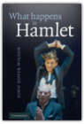
J. Dover Wilson
John Dover Wilson's What Happens in Hamlet is a classic of Shakespeare criticism. First published in 1935, it is still being read throughout the English-speaking world and has been widely translated. Hamlet has excited more curiosity and aroused more debate than any other play ever written. Is Hamlet really mad? Does he really see his father's ghost, or is it an illusion? Is the ghost good or bad? What does it all mean? Dover Wilson brings out the significance of each part of the complex action, against the background. His analysis of the play emphasises Shakespeare's dramatic art and shows how the play must be seen and heard to be understood. This is a readable, entertaining and scholarly book.
|


My Library
Collection Total:
1320 Items
1320 Items
Last Updated:
Apr 14, 2013
Apr 14, 2013
 Made with Delicious Library
Made with Delicious Library